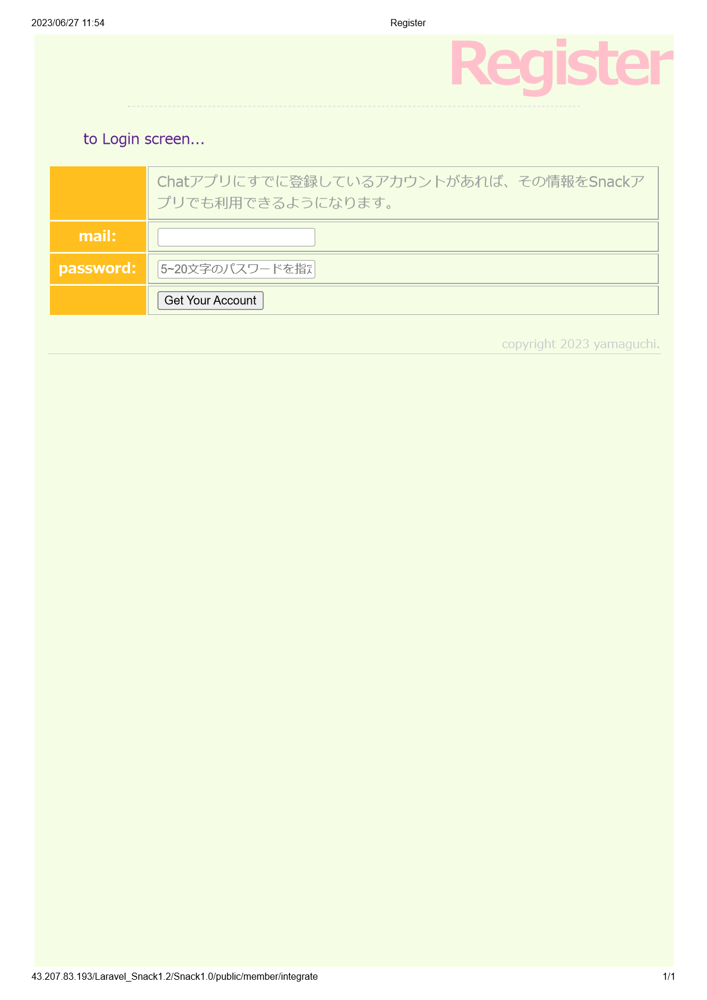
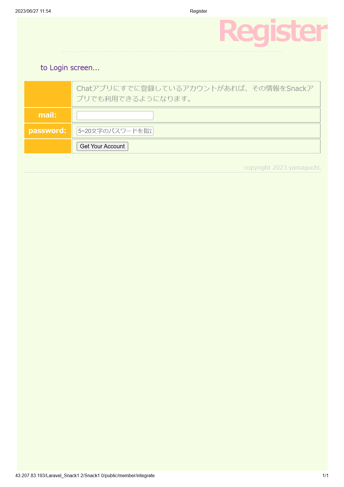
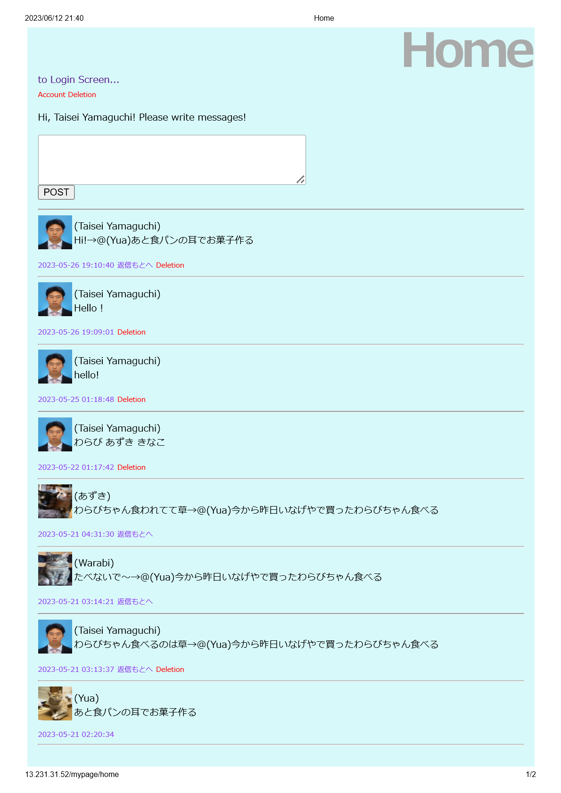
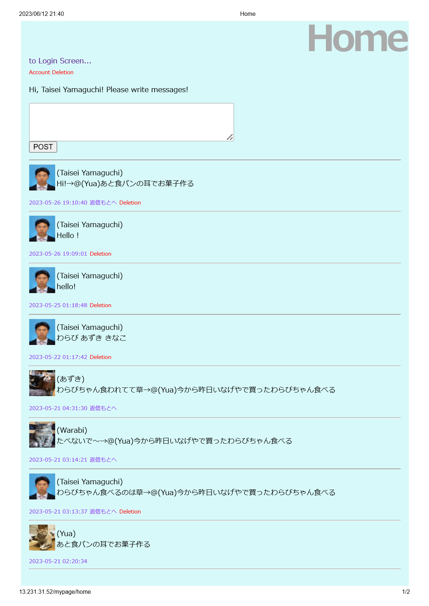

My Projects
OOP Final Project: Drag-n-Drop (2023.10)
This is a model site for Project management created for a school project.
It was developed with an object-oriented approach in mind.
*Technical Specifications: HTML, CSS, JavaScript, TypeScript
Github link (oop-final-Drag-n-Drop)
OOP Assignment: ToDoList(2023.10)
This is a model site for ToDoList created for a school project.
It was developed with an object-oriented approach in mind.
*Technical Specifications: HTML, CSS, JavaScript, TypeScript
BananaFlaskAPP (2023.8~9)
I often eat bananas for breakfast, but depending on when I eat them, I sometimes find that they are not tasty.
Therefore, I decided to create a web application that uses machine learning to judge the taste of bananas based on their images so that I can always enjoy bananas.
This is a Flask application created using BananaDetectModel and BananaPredictModel.
*Technical Specifications: Python, Flask,HTML,CSS,JavaScript,JQuery
Github link (Banana Flask Application)

BananaAI (BananaPredict.pkl) (2023.8~9)
I often eat bananas for breakfast, but depending on when I eat them, I sometimes find that they are not tasty.
Therefore, I decided to create a web application that uses machine learning to judge the taste of bananas based on their images so that I can always eat bananas with good taste.
This is a model that judges the taste of bananas based on the detected bananas.
*Technical Specifications: Python, pytorch, JupiterNotebook

BananaAI (BananaDetect.pkl) (2023.8~9)
I often eat bananas for breakfast, but depending on when I eat them, I sometimes find that they are not tasty.
Therefore, I decided to create a web application that uses machine learning to judge the taste of bananas based on their images so that I can always eat bananas with good taste.
This is a model that detects banana's objects in images.
*Technical Specifications: Python, pytorch, JupiterNotebook
OOP Midterm Project :Fake Shop (2023.9)
This is a model site for a Shopping Site I created for a school project.
I tried to create classes such as shoppingCart and ItemList with an object-oriented approach.
*Technical Specifications: HTML, CSS, JavaScript
Github link (0523-OOP-Midterm-Project)

Web2 Final Project :Fake Bank (2023.8~9)
This is a model site for a Banking Site created for a school project.
The server side was prepared in advance, and we mainly created the Frontend that makes API requests.
We also worked on the project in a team of three.
*Technical Specifications: HTML, CSS, JavaScript, JQuery
*Colaborator: Masahiro Kotani, Lam Kai On Bosco
Github link (0523-Web2-Final-Project)

Member Integration Application (2023.6)
So far, I have created my own CHAT and SNACK apps.
However, it would be cumbersome for users to register new members in each.
So, if member information is registered in either one of the applications,
If you have registered your member information in either application, you can easily integrate your member information by simply entering your email and password.
*Technical Specifications: PHP, Laravel, MySQL, Postman
Github link (snack application)
 

Snack Application (2023.3~2023.6)
This application is for sharing information about sweets and sweets from other countries.
Sweets sold in Japan, where I am from, and sweets sold here in Canada are completely different.
Both countries' sweets are delicious, but I could not get to know Canadian sweets while I was in Japan.
I am sure it is the same for people in Canada.
That is why we created this application.
This application has a "Like" function, a search function, and a recommendation function. function, search function, and recommended snacks function.
It also has a "Like" function. status, the application will automatically suggest the user's favorite snacks.
*Technical Specifications: PHP, Laravel, JavaScript, MySQL, HTML, CSS
Github link (snack application)
application link (snack application)


Chat Application (2023.5)
ユThis application allows users to communicate with each other.
Although simple, it has basic functions such as posting, replying, and deleting.
*Technical Specifications: PHP, Laravel, MySQL, HTML, CSS
Github link (chat application)
application link (chat application)
 


Music Player (2022.12)
This music player is a collection of free music downloads to get you in the Halloween mood.
This application has the ability to play music in random order.
Also, the illustration changes while the music player is playing and while it is stopped.
*Technical Specifications: JavaScript, HTML, CSS
Github link (music player)
application link (music player)